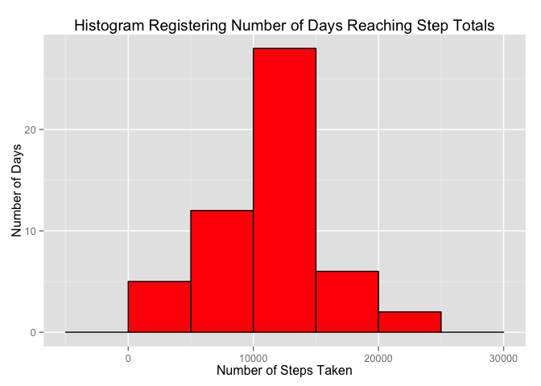

Reproducible Data Coursera; Peer Assignment 1
Wesley Small
August 8, 2015
Preliminary activities
- Load libraries DPLYR, LUBRIDATE AND GGPLOT2.
library(dplyr)
library(lubridate)
library(ggplot2)- Helper functions created for tidy data/plotting; Setup for the step interval scale to the logical hour and associated label.
intervalDivision <- split( 0:288, ceiling(seq_along(0:288)/12))
getStepScaleBreaks <- function() {
output <- numeric(length = 25)
for(i in 1:25)
output[i] <-intervalDivision[[i]][1]
output
}
getStepScaleLabels <- function() {
output <- numeric(length = 25)
for(i in 1:25) {
dayPeriod <-"am"
if (i > 13) dayPeriod <- "pm"
output[i] <- paste0(i-1,":00 ", dayPeriod)
}
output
}TASK 1: “Load the data”
Load the dataset and perform some tranformations suitable for further analysis below.
dfActivity <- read.csv("activity.csv")Transformations to original dataset:
dfActivity$date <- ymd(dfActivity$date)
dfActivity$date <- as.factor(dfActivity$date)
dfActivity$interval <- as.factor(dfActivity$interval)
dtActivity <- tbl_df(dfActivity)The Initial Activity dataset has the following structure:
str(dfActivity)## 'data.frame': 17568 obs. of 3 variables:
## $ steps : int NA NA NA NA NA NA NA NA NA NA ...
## $ date : Factor w/ 61 levels "2012-10-01","2012-10-02",..: 1 1 1 1 1 1 1 1 1 1 ...
## $ interval: Factor w/ 288 levels "0","5","10","15",..: 1 2 3 4 5 6 7 8 9 10 ...TASK 2: “What is mean total number of steps taken per day?”"
subsetDTActivityA <-
dtActivity %>%
select( date, steps) %>%
filter( !is.na(steps)) %>%
group_by(date) %>%
summarise(
tot_steps = sum(steps),
avg_steps = mean(steps, na.rm = TRUE),
med_steps = median(steps, na.rm = TRUE))The histogram of the total number of steps taken each day
qplot(
subsetDTActivityA$tot_steps,
binwidth = 500,
geom = "histogram",
main = "Histogram Registering Number of Days Reaching Step Totals",
xlab = "Number of Steps Taken",
ylab = "Number of Days",
fill = I("lightgreen"),
colour = I("black")) 
Calculate and report the mean and median total number of steps taken per day
stepReport <- subsetDTActivityA %>%
select(date,avg_steps,med_steps)
stepReport## Source: local data frame [53 x 3]
##
## date avg_steps med_steps
## 1 2012-10-02 0.43750 0
## 2 2012-10-03 39.41667 0
## 3 2012-10-04 42.06944 0
## 4 2012-10-05 46.15972 0
## 5 2012-10-06 53.54167 0
## 6 2012-10-07 38.24653 0
## 7 2012-10-09 44.48264 0
## 8 2012-10-10 34.37500 0
## 9 2012-10-11 35.77778 0
## 10 2012-10-12 60.35417 0
## .. ... ... ...TASK 3: “What is the average daily activity pattern?”
Shown below is a time series plot (i.e. type = “l”) of the 5-minute interval (x-axis) and the average number of steps taken, averaged across all days (y-axis):
# SUMMARIZE DATASET TO OBTAIN AVERAGE STEPS
subsetDTActivityB <-
dtActivity %>%
select( interval, steps) %>%
filter( !is.na(steps) ) %>%
group_by(interval) %>%
summarise(average_steps = mean(steps))
subsetDTActivityB$interval <- as.numeric(subsetDTActivityB$interval) qplot(
interval,
average_steps,
data = subsetDTActivityB,
geom = "line",
main = "Average Number Step Rate Record Over A Day",
xlab = "Hour of Day [Generated from 288 5 minute Observations]",
ylab = "Average Steps Rate") +
scale_x_continuous(breaks = getStepScaleBreaks(), labels = getStepScaleLabels()) +
theme(axis.text.x = element_text(angle=90))
“Which 5-minute interval, on average across all the days in the dataset, contains the maximum number of steps?”
subsetDTActivityC <-
dtActivity %>%
select( interval, steps) %>%
filter( !is.na(steps) ) %>%
group_by(interval) %>%
summarise(average_steps = mean(steps))
maxNumberSteps <- subsetDTActivityC[subsetDTActivityC$average_steps == max(subsetDTActivityC$average_steps),]ANSWER:
Time interval labelled: 835 has the maximum average number of steps at 206.1698113
TASK 4: Inputing Missing Values
Replacing the NAs in step count with averages of the total step count. The Averages are rounded up to the nearest whole integer number.
In the provided Activity dataset, there are 2304 records that have a step count missing out of the total 17568
# FILTER FOR COMPLETE VS INCOMPLETE
dtActivityComplete <- dtActivity[(complete.cases(dtActivity) == TRUE),]
dtActivityMissing <- dtActivity[(complete.cases(dtActivity) == FALSE),]
# CALCULATE INTERVAL BASED STEP AVERAGES
subsetDTActivityStepAvg <-
dtActivity %>%
select( interval, steps) %>%
filter( !is.na(steps) ) %>%
group_by(interval) %>%
summarise(average_steps = mean(steps))
# LEFT JOIN THE AVERAGES TO INCOMPLETE CASES
dtActivityMissingAvg <- inner_join(x = dtActivityMissing, y = subsetDTActivityStepAvg)
# ROUND UP THE AVERAGES AND ASSIGN TO THE STEPS COLUMN
dtActivityMissingAvg$steps <- ceiling(dtActivityMissingAvg$average_steps)
# OBTAIN A NEW DATASET FOR THE FIXED MISSING CASES
dtActivityNotMissing <- dtActivityMissingAvg[, (colnames(dtActivityMissingAvg) %in% c("steps","date","interval"))]
# RECREATE A NEW COMPLETE DATASET
dtActivityUpdated <- rbind(dtActivityComplete, dtActivityNotMissing)
# SUMMARIZE THE STEPS BY TOTAL #, AVERAGE AND MEDIAN
subsetDTActivityUpdated <-
dtActivityUpdated %>%
select( date, steps) %>%
filter( !is.na(steps) ) %>%
group_by(date) %>%
summarise(tot_steps = sum(steps),
avg_steps = mean(steps),
med_steps = median(steps))# PLOT COMPLETE CASES DATASET
qplot(subsetDTActivityUpdated$tot_steps,
binwidth = 500,
geom = "histogram",
main = "Histogram Registering Number of Days Reaching Step Totals",
xlab = "Number of Steps Taken",
ylab = "Number of Days",
fill = I("orange"),
colour = I("black")) 
TASK 5: Activity patterns on weekdays vs. weekends?
The follow is the logic used to add the Weekend Vs Weekend Factor Categorical factors into the data.
# CREATE NEW FUNCTION TO RETURN THE FACTOR BASED ON THE WEEKDAYS FUNCTION
getWeekPeriod <- function(x) {
if (weekdays(as.POSIXct(x)) %in% c("Saturday","Sunday"))
as.factor("WEEKEND")
else
as.factor("WEEKDAY")
}
# BIND THE NEW CONTENT TO THE EXISTING TABLE
dtFinal<- cbind(dtActivityUpdated, sapply(dtActivityUpdated$date,getWeekPeriod))
colnames(dtFinal) <- c("steps","date","interval","weekperiod")
# CALCULATE THE AVERAGES GROUPED BY WEEK-PERIOD, AND INTERVAL
dtFinal$interval <- as.numeric(dtFinal$interval)
dtFinalScrubbed <-
dtFinal %>%
group_by(weekperiod, interval) %>%
summarise(average_steps = mean(steps))The following is the plot showing the activity level differences on the weekend vs the work week days.
p <- qplot(
interval,
average_steps,
data = dtFinalScrubbed,
facets = weekperiod ~ . ,
geom = "line",
color = weekperiod,
main = "Average No. of Steps Taken by Time of Day\nDivided by Weekend Period",
xlab = "Time Interval (288 5 minute Observations by Hour)",
ylab = "Average Steps") +
scale_x_continuous(breaks = getStepScaleBreaks(), labels = getStepScaleLabels()) +
theme(axis.text.x = element_text(angle=90))
p